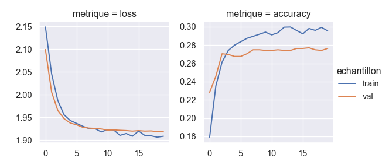
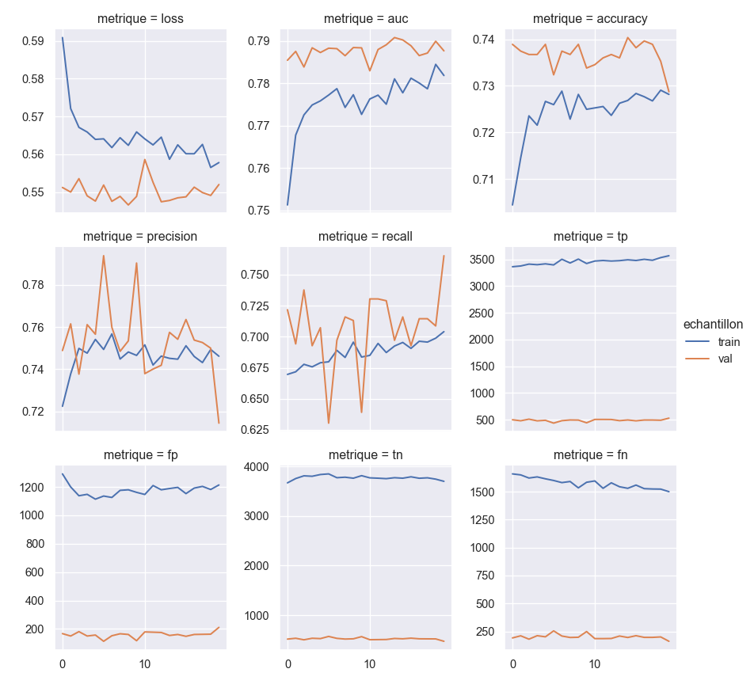

Introduction
On va modeliser ici une cible multi-classe a l’aide de l’interface Keras qui a ete integree a TensorFlow. Elle permet une modelisation rapide et fournit des sorties graphiques sur la qualite du modele.
On reprend le jeu de donnees et les pretraitements du document precedent sur TensorFlow.
Donnees et modules
library("reticulate")
# on a installe tensorflow dans l'environnement vituel conda "tf_env"
use_condaenv(condaenv = "tf_env")
data(package = "arules", IncomeESL)
dtf_class = tidyr::drop_na(IncomeESL)
colnames(dtf_class) = gsub(" ", "_", colnames(dtf_class))
dtf_class = dtf_class[c("number_in_household", "marital_status", "householder_status", "income")]
dtf_class$number_in_household = as.character(dtf_class$number_in_household)
dtf_class$number_in_household[dtf_class$number_in_household == "9+"]= "9"
dtf_class$number_in_household = as.integer(dtf_class$number_in_household)
for (col_quali in colnames(dtf_class)[sapply(dtf_class, is.factor)]) {
dtf_class[[col_quali]] = as.character(dtf_class[[col_quali]] )
}
dtf_class$income = gsub(",", "-", dtf_class$income)import numpy as np
import pandas as pd
pd.set_option('display.max_columns', None)
import sys
import shutil
import pprint
pp = pprint.PrettyPrinter(indent=4)
from sklearn.model_selection import train_test_split
import tensorflow as tf
from tensorflow import feature_column
from tensorflow.keras import layers
# pour regler un bug graphique assez courant avec Anaconda,
# adapter le chemin vers le dossier 'plugins/platforms'
import os
from os import path
os.environ['QT_QPA_PLATFORM_PLUGIN_PATH'] = 'C:/Users/Sebastien/Anaconda3/Library/plugins/platforms'
os.chdir(".")
import matplotlib.pyplot as plt
import seaborn as sns
sns.set()
tf.random.set_seed(2021)Les versions Python et TensorFlow utilisees.
sys.version'3.8.8 (default, Apr 13 2021, 15:08:03) [MSC v.1916 64 bit (AMD64)]'tf.__version__'2.3.0'Les donnees sous Python.
dtf_class = r.dtf_class
dtf_class.head() number_in_household marital_status householder_status income
0 5 married own 75+
1 3 married rent 75+
2 4 single live with parents/family [0-10)
3 4 single live with parents/family [0-10)
4 2 married own [50-75)Frequences des modalites de la cible.
dtf_class.income.value_counts(normalize=True).sort_index()75+ 0.108057
[0-10) 0.182519
[10-15) 0.076934
[15-20) 0.073444
[20-25) 0.089878
[25-30) 0.076643
[30-40) 0.123037
[40-50) 0.114020
[50-75) 0.155468
Name: income, dtype: float64Dictionnaire pour recoder la variable cible.
# mapping pour recoder les modalites cibles en entiers
dico_income = {'[0-10)':0,'[10-15)':1,'[15-20)':2, '[20-25)':3,'[25-30)':4, '[30-40)':5, '[40-50)':6, '[50-75)':7,'75+':8}
dico_income_bin = {'[0-10)':0,'[10-15)':0,'[15-20)':0, '[20-25)':0,'[25-30)':0, '[30-40)':1, '[40-50)':1, '[50-75)':1,'75+':1}
pp.pprint(dico_income){ '75+': 8,
'[0-10)': 0,
'[10-15)': 1,
'[15-20)': 2,
'[20-25)': 3,
'[25-30)': 4,
'[30-40)': 5,
'[40-50)': 6,
'[50-75)': 7}pp.pprint(dico_income_bin){ '75+': 1,
'[0-10)': 0,
'[10-15)': 0,
'[15-20)': 0,
'[20-25)': 0,
'[25-30)': 0,
'[30-40)': 1,
'[40-50)': 1,
'[50-75)': 1}Pretraitement des colonnes
feature_columns = []
# numeriques
feature_columns.append(feature_column.numeric_column("number_in_household"))
# en buckets
number_in_household = feature_column.numeric_column("number_in_household")
number_bucket = tf.feature_column.bucketized_column(number_in_household, boundaries = [3, 5, 7])
feature_columns.append(number_bucket)
# indicatrices
marital_status = tf.feature_column.categorical_column_with_vocabulary_list(
'marital_status', ['single', 'married', 'divorced', 'cohabitation'', widowed'])
marital_one_hot = tf.feature_column.indicator_column(marital_status)
feature_columns.append(marital_one_hot)
# embedding
householder_status = tf.feature_column.categorical_column_with_vocabulary_list(
'householder_status', ['own', 'rent', 'live with parents/family'])
householder_embedding = tf.feature_column.embedding_column(householder_status, dimension = 2)
feature_columns.append(householder_embedding)
# interactions
interactions = tf.feature_column.crossed_column([marital_status, number_bucket],
hash_bucket_size = 7, hash_key = 8)
interactions = tf.feature_column.indicator_column(interactions)
feature_columns.append(interactions)Dictionnaire pour la lisibilite des operations effectuees, une liste suffirait techniquement.
feature_columns = {"number_in_household":feature_column.numeric_column("number_in_household"),
"number_bucket": number_bucket,
"marital_one_hot": marital_one_hot,
"householder_embedding": householder_embedding,
"interactions": interactions
}Fonction de lecture des donnees
Par defaut on considere que la cible est multi-classes et on recode ses modalites de 0 a 8. Si on prend dico = dico_income_bin on considere que la cible est binaire et recodee en 0/1.
# on cree un tf.data.dataset a patir du Dataframe
def df_to_dataset(dataframe, shuffle = True, batch_size = 32, dico = dico_income, nb_repet = None):
dataframe = dataframe.copy()
labels = dataframe.pop('income').map(dico)
ds = tf.data.Dataset.from_tensor_slices((dict(dataframe), labels))
if shuffle:
# permutation dde toutes les lignes du dataframe car seulement quelques milliers de lignes
ds = ds.shuffle(buffer_size = len(dataframe))
ds = ds.repeat(count = nb_repet).batch(batch_size)
return dsModelisation Sequentielle avec Keras
Train, test, validation
Les trois jeux de donnees pour l’apprentissage, les validations et le test final.
# test = 20% du total
train, test = train_test_split(dtf_class, test_size=0.2, random_state = 2021)
# val = 25% du train = 20% du total
train, val = train_test_split(train, test_size=0.25, random_state = 2021)Parametres et metriques
Architecture du modele
Un reseau de neurones avec Keras Sequentiel est une succession de couches de neurones, ici on a :
- une couche DenseFeatures de conversion des entrees en tenseurs
- deux couches cachees avec respectivement 16 et 8 neurones et la fonction d’activation standard “relu” pour les couches cachees
- une couche Dropout qui s"applique a la couche precedente de 8 neurones. Elle permet de lutter contre le surapprentissage en supprimant avec une probabilite de 20% chacun des 8 neurones lors de l’entrainement du reseau. Ca n’a de reel interet que pour des reseaux vraiments profonds, c’est-a-dire avec de nombreuses couches cachees.
- une couche de sortie avec un score par modalite de la cible. La fonction softmax generalise la sigmoide qui ne s’applique qu’aux cibles binaires.
Le nombre de couches cachees, le nombre de neurones de chaque couche et le taux de dropout sont autant d’hyperparametres a optimiser.
modele_softmax = tf.keras.Sequential([
layers.DenseFeatures(feature_columns = feature_columns.values()),
layers.Dense(16, activation = 'relu', name = "hidden1"),
layers.Dense(8, activation = 'relu', name = "hidden2"),
layers.Dropout(0.2),
layers.Dense(len(dico_income), activation = 'softmax', name = "output")
])Une variante avec cible binaire.
modele_binaire = tf.keras.Sequential([
layers.DenseFeatures(feature_columns = feature_columns.values()),
layers.Dense(16, activation = 'relu', name = "hidden1"),
layers.Dense(8, activation = 'relu', name = "hidden2"),
layers.Dropout(0.2),
layers.Dense(1, activation = 'sigmoid', name = "output")
])Autres parametres
On precise la valeur de certains parametres dans la fonction compile plus bas :
- hyperparametre optimizer : le choix de l’algorithme de descente de gradient, ils n’ont pas tous les memes parametres. Ainsi l’optimiseur Ftrl propose des ratios de regularisation, voir https://www.tensorflow.org/api_docs/python/tf/keras/optimizers/Ftrl
- hyperparametre loss : la fonction de perte a minimiser par l’algorithme de descente de gradient, la “cross-entropy” n’est rien d’autre que l’oppose de la log-vraisemblance
- tf.keras.losses.BinaryCrossentropy (ou ‘binary_crossentropy’) en cas de cible binaire 0/1
- tf.keras.losses.CategoricalCrossentropy (ou ‘categorical_crossentropy’) si cible multi-classes au format “une indicatrice par classe”
- tf.keras.losses.SparseCategoricalCrossentropy (ou ‘sparse_categorical_crossentropy’) si cible multi-classes au format “colonne d’entiers”
- metrics : les metriques metiers classiques pour evaluer la performance du modele. Les metriques ne sont pas des hyperparametres du modele : elles n’interviennent pas dans l’entrainement du modele. Si la cible est binaire on a entre autres
- l’AUC
- l’exactitude toujours fournie par defaut
- la precision
- le rappel
- les metriques de comptages des vrais positifs, faux negatifs, … de la matrice de confusion
Des metriques pour le cas d’une cible binaire.
metriques_bin = [tf.keras.metrics.AUC(name='auc'),
tf.keras.metrics.BinaryAccuracy(name='accuracy'),
tf.keras.metrics.Precision(name='precision'),
tf.keras.metrics.Recall(name='recall'),
tf.keras.metrics.TruePositives(name='tp'),
tf.keras.metrics.FalsePositives(name='fp'),
tf.keras.metrics.TrueNegatives(name='tn'),
tf.keras.metrics.FalseNegatives(name='fn')
]Dependances entre hyperparametres
On suit les recommandations de l’article https://medium.com/google-cloud/ml-design-pattern-3-virtual-epochs-f842296de730 qui deconseille de choisir directement le nombre d’epoques ou d’etapes (c’est-a-dire de mini-batchs) mais plutot
- la taille des mini-batchs : TRAIN_BATCH_SIZE
- le nombre total d’exemples montres au modele pendant son entrainement : NUM_TRAIN_EXAMPLES
- le nombre de checkpoints, a chaque checkpoint on stocke les performances du modele qu’on va representer graphiquement : NUM_CHECKPOINTS
Ici les “epoques” sont virtuelles et ne correspondent pas tout a fait a la lecture de tout le dataframe, comme l’indique la documentation https://www.tensorflow.org/api_docs/python/tf/keras/Model#fit
- si l’argument steps_per_epoch est renseigne, une epoque virtuelle est consideree achevee quand on a lu steps_per_epoch * TRAIN_BATCH_SIZE exemples
- a la fin de chaque epoque virtuelle des statistiques sont calculees, voir https://www.tensorflow.org/api_docs/python/tf/keras/callbacks/BaseLogger
tf.random.set_seed(2021)
TRAIN_BATCH_SIZE = 64
NUM_TRAIN_EXAMPLES = 200000
NUM_CHECKPOINTS = 20
steps_per_epoch = NUM_TRAIN_EXAMPLES // (TRAIN_BATCH_SIZE * NUM_CHECKPOINTS)Entrainement des modeles
On entraine d’abord le modele multi-classes. Les jeu de donnees de validation et de test n’ont pas besoin d’etre parcourus plusieurs fois ou d’etre permutes, contrairement au jeu d’apprentissage.
train_ds = df_to_dataset(train, batch_size = TRAIN_BATCH_SIZE)
val_ds = df_to_dataset(val, shuffle = False, batch_size = TRAIN_BATCH_SIZE, nb_repet = 1)
test_ds = df_to_dataset(test, shuffle = False, batch_size = TRAIN_BATCH_SIZE, nb_repet = 1)
# on configure le modele
modele_softmax.compile(optimizer = 'adam',
loss = tf.keras.losses.SparseCategoricalCrossentropy(),
metrics = ['accuracy'])
history_sofmax = modele_softmax.fit(x = train_ds,
steps_per_epoch = steps_per_epoch,
epochs = NUM_CHECKPOINTS,
validation_data = val_ds
)
Epoch 1/20
1/156 [..............................] - ETA: 0s - loss: 2.2057 - accuracy: 0.1875
18/156 [==>...........................] - ETA: 0s - loss: 2.2139 - accuracy: 0.1224
35/156 [=====>........................] - ETA: 0s - loss: 2.1987 - accuracy: 0.1205
48/156 [========>.....................] - ETA: 0s - loss: 2.1897 - accuracy: 0.1279
62/156 [==========>...................] - ETA: 0s - loss: 2.1817 - accuracy: 0.1376
76/156 [=============>................] - ETA: 0s - loss: 2.1739 - accuracy: 0.1482
96/156 [=================>............] - ETA: 0s - loss: 2.1665 - accuracy: 0.1618
113/156 [====================>.........] - ETA: 0s - loss: 2.1609 - accuracy: 0.1702
134/156 [========================>.....] - ETA: 0s - loss: 2.1551 - accuracy: 0.1743
156/156 [==============================] - 2s 10ms/step - loss: 2.1483 - accuracy: 0.1792 - val_loss: 2.0989 - val_accuracy: 0.2284
Epoch 2/20
1/156 [..............................] - ETA: 0s - loss: 2.1007 - accuracy: 0.2031
21/156 [===>..........................] - ETA: 0s - loss: 2.0925 - accuracy: 0.2106
42/156 [=======>......................] - ETA: 0s - loss: 2.0775 - accuracy: 0.2251
63/156 [===========>..................] - ETA: 0s - loss: 2.0684 - accuracy: 0.2297
83/156 [==============>...............] - ETA: 0s - loss: 2.0648 - accuracy: 0.2263
106/156 [===================>..........] - ETA: 0s - loss: 2.0567 - accuracy: 0.2311
127/156 [=======================>......] - ETA: 0s - loss: 2.0498 - accuracy: 0.2345
146/156 [===========================>..] - ETA: 0s - loss: 2.0480 - accuracy: 0.2342
156/156 [==============================] - 0s 3ms/step - loss: 2.0454 - accuracy: 0.2353 - val_loss: 2.0053 - val_accuracy: 0.2458
Epoch 3/20
1/156 [..............................] - ETA: 0s - loss: 2.0419 - accuracy: 0.2656
21/156 [===>..........................] - ETA: 0s - loss: 2.0125 - accuracy: 0.2478
41/156 [======>.......................] - ETA: 0s - loss: 2.0124 - accuracy: 0.2519
63/156 [===========>..................] - ETA: 0s - loss: 2.0021 - accuracy: 0.2589
83/156 [==============>...............] - ETA: 0s - loss: 1.9955 - accuracy: 0.2605
105/156 [===================>..........] - ETA: 0s - loss: 1.9871 - accuracy: 0.2641
125/156 [=======================>......] - ETA: 0s - loss: 1.9883 - accuracy: 0.2609
147/156 [===========================>..] - ETA: 0s - loss: 1.9890 - accuracy: 0.2607
156/156 [==============================] - 0s 3ms/step - loss: 1.9865 - accuracy: 0.2613 - val_loss: 1.9649 - val_accuracy: 0.2705
Epoch 4/20
1/156 [..............................] - ETA: 0s - loss: 2.0115 - accuracy: 0.2656
21/156 [===>..........................] - ETA: 0s - loss: 1.9612 - accuracy: 0.2872
41/156 [======>.......................] - ETA: 0s - loss: 1.9631 - accuracy: 0.2752
62/156 [==========>...................] - ETA: 0s - loss: 1.9636 - accuracy: 0.2692
83/156 [==============>...............] - ETA: 0s - loss: 1.9590 - accuracy: 0.2722
107/156 [===================>..........] - ETA: 0s - loss: 1.9590 - accuracy: 0.2709
129/156 [=======================>......] - ETA: 0s - loss: 1.9591 - accuracy: 0.2706
150/156 [===========================>..] - ETA: 0s - loss: 1.9553 - accuracy: 0.2733
156/156 [==============================] - 0s 3ms/step - loss: 1.9555 - accuracy: 0.2741 - val_loss: 1.9470 - val_accuracy: 0.2698
Epoch 5/20
1/156 [..............................] - ETA: 0s - loss: 2.0049 - accuracy: 0.1875
22/156 [===>..........................] - ETA: 0s - loss: 1.9476 - accuracy: 0.2770
43/156 [=======>......................] - ETA: 0s - loss: 1.9455 - accuracy: 0.2794
66/156 [===========>..................] - ETA: 0s - loss: 1.9491 - accuracy: 0.2789
91/156 [================>.............] - ETA: 0s - loss: 1.9417 - accuracy: 0.2831
115/156 [=====================>........] - ETA: 0s - loss: 1.9444 - accuracy: 0.2799
137/156 [=========================>....] - ETA: 0s - loss: 1.9417 - accuracy: 0.2809
156/156 [==============================] - 0s 3ms/step - loss: 1.9430 - accuracy: 0.2799 - val_loss: 1.9373 - val_accuracy: 0.2676
Epoch 6/20
1/156 [..............................] - ETA: 0s - loss: 1.8487 - accuracy: 0.2812
22/156 [===>..........................] - ETA: 0s - loss: 1.9353 - accuracy: 0.2763
43/156 [=======>......................] - ETA: 0s - loss: 1.9265 - accuracy: 0.2867
67/156 [===========>..................] - ETA: 0s - loss: 1.9349 - accuracy: 0.2843
87/156 [===============>..............] - ETA: 0s - loss: 1.9371 - accuracy: 0.2832
107/156 [===================>..........] - ETA: 0s - loss: 1.9378 - accuracy: 0.2827
135/156 [========================>.....] - ETA: 0s - loss: 1.9359 - accuracy: 0.2837
156/156 [==============================] - ETA: 0s - loss: 1.9366 - accuracy: 0.2837
156/156 [==============================] - 0s 3ms/step - loss: 1.9366 - accuracy: 0.2837 - val_loss: 1.9336 - val_accuracy: 0.2676
Epoch 7/20
1/156 [..............................] - ETA: 0s - loss: 1.8853 - accuracy: 0.3125
22/156 [===>..........................] - ETA: 0s - loss: 1.9240 - accuracy: 0.2848
47/156 [========>.....................] - ETA: 0s - loss: 1.9367 - accuracy: 0.2842
69/156 [============>.................] - ETA: 0s - loss: 1.9340 - accuracy: 0.2889
90/156 [================>.............] - ETA: 0s - loss: 1.9282 - accuracy: 0.2889
109/156 [===================>..........] - ETA: 0s - loss: 1.9288 - accuracy: 0.2878
125/156 [=======================>......] - ETA: 0s - loss: 1.9354 - accuracy: 0.2849
140/156 [=========================>....] - ETA: 0s - loss: 1.9324 - accuracy: 0.2858
156/156 [==============================] - 1s 3ms/step - loss: 1.9304 - accuracy: 0.2874 - val_loss: 1.9281 - val_accuracy: 0.2705
Epoch 8/20
1/156 [..............................] - ETA: 0s - loss: 1.8391 - accuracy: 0.3594
16/156 [==>...........................] - ETA: 0s - loss: 1.8936 - accuracy: 0.2900
32/156 [=====>........................] - ETA: 0s - loss: 1.9178 - accuracy: 0.2949
48/156 [========>.....................] - ETA: 0s - loss: 1.9196 - accuracy: 0.2910
64/156 [===========>..................] - ETA: 0s - loss: 1.9286 - accuracy: 0.2844
84/156 [===============>..............] - ETA: 0s - loss: 1.9218 - accuracy: 0.2919
100/156 [==================>...........] - ETA: 0s - loss: 1.9208 - accuracy: 0.2920
121/156 [======================>.......] - ETA: 0s - loss: 1.9198 - accuracy: 0.2912
142/156 [==========================>...] - ETA: 0s - loss: 1.9234 - accuracy: 0.2903
156/156 [==============================] - 1s 3ms/step - loss: 1.9253 - accuracy: 0.2896 - val_loss: 1.9262 - val_accuracy: 0.2749
Epoch 9/20
1/156 [..............................] - ETA: 0s - loss: 2.0118 - accuracy: 0.2969
22/156 [===>..........................] - ETA: 0s - loss: 1.9282 - accuracy: 0.2848
42/156 [=======>......................] - ETA: 0s - loss: 1.9234 - accuracy: 0.2820
62/156 [==========>...................] - ETA: 0s - loss: 1.9234 - accuracy: 0.2845
86/156 [===============>..............] - ETA: 0s - loss: 1.9225 - accuracy: 0.2885
106/156 [===================>..........] - ETA: 0s - loss: 1.9231 - accuracy: 0.2910
127/156 [=======================>......] - ETA: 0s - loss: 1.9256 - accuracy: 0.2899
151/156 [============================>.] - ETA: 0s - loss: 1.9263 - accuracy: 0.2918
156/156 [==============================] - 0s 3ms/step - loss: 1.9250 - accuracy: 0.2919 - val_loss: 1.9256 - val_accuracy: 0.2749
Epoch 10/20
1/156 [..............................] - ETA: 0s - loss: 1.8372 - accuracy: 0.3906
23/156 [===>..........................] - ETA: 0s - loss: 1.9384 - accuracy: 0.2914
44/156 [=======>......................] - ETA: 0s - loss: 1.9277 - accuracy: 0.2887
67/156 [===========>..................] - ETA: 0s - loss: 1.9138 - accuracy: 0.2941
91/156 [================>.............] - ETA: 0s - loss: 1.9162 - accuracy: 0.2936
112/156 [====================>.........] - ETA: 0s - loss: 1.9196 - accuracy: 0.2931
136/156 [=========================>....] - ETA: 0s - loss: 1.9219 - accuracy: 0.2909
156/156 [==============================] - 0s 3ms/step - loss: 1.9178 - accuracy: 0.2942 - val_loss: 1.9242 - val_accuracy: 0.2742
Epoch 11/20
1/156 [..............................] - ETA: 0s - loss: 1.9566 - accuracy: 0.3438
19/156 [==>...........................] - ETA: 0s - loss: 1.9308 - accuracy: 0.3002
46/156 [=======>......................] - ETA: 0s - loss: 1.9294 - accuracy: 0.2867
66/156 [===========>..................] - ETA: 0s - loss: 1.9276 - accuracy: 0.2888
87/156 [===============>..............] - ETA: 0s - loss: 1.9258 - accuracy: 0.2913
109/156 [===================>..........] - ETA: 0s - loss: 1.9254 - accuracy: 0.2926
132/156 [========================>.....] - ETA: 0s - loss: 1.9244 - accuracy: 0.2926
156/156 [==============================] - ETA: 0s - loss: 1.9231 - accuracy: 0.2912
156/156 [==============================] - 0s 3ms/step - loss: 1.9231 - accuracy: 0.2912 - val_loss: 1.9219 - val_accuracy: 0.2742
Epoch 12/20
1/156 [..............................] - ETA: 0s - loss: 1.9455 - accuracy: 0.2188
30/156 [====>.........................] - ETA: 0s - loss: 1.9343 - accuracy: 0.2953
54/156 [=========>....................] - ETA: 0s - loss: 1.9241 - accuracy: 0.2859
79/156 [==============>...............] - ETA: 0s - loss: 1.9211 - accuracy: 0.2953
103/156 [==================>...........] - ETA: 0s - loss: 1.9185 - accuracy: 0.2941
128/156 [=======================>......] - ETA: 0s - loss: 1.9190 - accuracy: 0.2944
152/156 [============================>.] - ETA: 0s - loss: 1.9209 - accuracy: 0.2941
156/156 [==============================] - 0s 2ms/step - loss: 1.9220 - accuracy: 0.2936 - val_loss: 1.9223 - val_accuracy: 0.2749
Epoch 13/20
1/156 [..............................] - ETA: 0s - loss: 2.0110 - accuracy: 0.2656
26/156 [====>.........................] - ETA: 0s - loss: 1.9215 - accuracy: 0.3017
51/156 [========>.....................] - ETA: 0s - loss: 1.9200 - accuracy: 0.2950
74/156 [=============>................] - ETA: 0s - loss: 1.8984 - accuracy: 0.3057
98/156 [=================>............] - ETA: 0s - loss: 1.9057 - accuracy: 0.3042
127/156 [=======================>......] - ETA: 0s - loss: 1.9126 - accuracy: 0.3017
151/156 [============================>.] - ETA: 0s - loss: 1.9105 - accuracy: 0.3014
156/156 [==============================] - 0s 2ms/step - loss: 1.9104 - accuracy: 0.2996 - val_loss: 1.9215 - val_accuracy: 0.2742
Epoch 14/20
1/156 [..............................] - ETA: 0s - loss: 1.9884 - accuracy: 0.2656
29/156 [====>.........................] - ETA: 0s - loss: 1.9157 - accuracy: 0.3093
53/156 [=========>....................] - ETA: 0s - loss: 1.9163 - accuracy: 0.3034
77/156 [=============>................] - ETA: 0s - loss: 1.9205 - accuracy: 0.2975
106/156 [===================>..........] - ETA: 0s - loss: 1.9189 - accuracy: 0.3009
135/156 [========================>.....] - ETA: 0s - loss: 1.9184 - accuracy: 0.3007
156/156 [==============================] - 0s 2ms/step - loss: 1.9144 - accuracy: 0.2998 - val_loss: 1.9208 - val_accuracy: 0.2742
Epoch 15/20
1/156 [..............................] - ETA: 0s - loss: 2.0066 - accuracy: 0.2656
27/156 [====>.........................] - ETA: 0s - loss: 1.9302 - accuracy: 0.2801
53/156 [=========>....................] - ETA: 0s - loss: 1.9134 - accuracy: 0.2916
77/156 [=============>................] - ETA: 0s - loss: 1.9135 - accuracy: 0.2926
104/156 [===================>..........] - ETA: 0s - loss: 1.9079 - accuracy: 0.2945
130/156 [========================>.....] - ETA: 0s - loss: 1.9130 - accuracy: 0.2935
155/156 [============================>.] - ETA: 0s - loss: 1.9100 - accuracy: 0.2950
156/156 [==============================] - 0s 2ms/step - loss: 1.9084 - accuracy: 0.2960 - val_loss: 1.9197 - val_accuracy: 0.2764
Epoch 16/20
1/156 [..............................] - ETA: 0s - loss: 1.9602 - accuracy: 0.2656
22/156 [===>..........................] - ETA: 0s - loss: 1.9540 - accuracy: 0.2798
51/156 [========>.....................] - ETA: 0s - loss: 1.9368 - accuracy: 0.2788
77/156 [=============>................] - ETA: 0s - loss: 1.9212 - accuracy: 0.2873
106/156 [===================>..........] - ETA: 0s - loss: 1.9226 - accuracy: 0.2886
131/156 [========================>.....] - ETA: 0s - loss: 1.9213 - accuracy: 0.2901
155/156 [============================>.] - ETA: 0s - loss: 1.9192 - accuracy: 0.2926
156/156 [==============================] - 0s 2ms/step - loss: 1.9199 - accuracy: 0.2923 - val_loss: 1.9207 - val_accuracy: 0.2764
Epoch 17/20
1/156 [..............................] - ETA: 0s - loss: 1.8909 - accuracy: 0.3594
30/156 [====>.........................] - ETA: 0s - loss: 1.9202 - accuracy: 0.2917
55/156 [=========>....................] - ETA: 0s - loss: 1.9132 - accuracy: 0.2977
84/156 [===============>..............] - ETA: 0s - loss: 1.9075 - accuracy: 0.3023
112/156 [====================>.........] - ETA: 0s - loss: 1.9120 - accuracy: 0.2998
132/156 [========================>.....] - ETA: 0s - loss: 1.9094 - accuracy: 0.2996
151/156 [============================>.] - ETA: 0s - loss: 1.9103 - accuracy: 0.2984
156/156 [==============================] - 0s 3ms/step - loss: 1.9102 - accuracy: 0.2982 - val_loss: 1.9197 - val_accuracy: 0.2771
Epoch 18/20
1/156 [..............................] - ETA: 0s - loss: 1.9674 - accuracy: 0.3438
16/156 [==>...........................] - ETA: 0s - loss: 1.9274 - accuracy: 0.2939
33/156 [=====>........................] - ETA: 0s - loss: 1.9197 - accuracy: 0.2969
47/156 [========>.....................] - ETA: 0s - loss: 1.9057 - accuracy: 0.3005
60/156 [==========>...................] - ETA: 0s - loss: 1.9016 - accuracy: 0.3029
77/156 [=============>................] - ETA: 0s - loss: 1.9037 - accuracy: 0.2985
101/156 [==================>...........] - ETA: 0s - loss: 1.9048 - accuracy: 0.2995
125/156 [=======================>......] - ETA: 0s - loss: 1.9107 - accuracy: 0.2964
151/156 [============================>.] - ETA: 0s - loss: 1.9093 - accuracy: 0.2960
156/156 [==============================] - 0s 3ms/step - loss: 1.9093 - accuracy: 0.2961 - val_loss: 1.9201 - val_accuracy: 0.2749
Epoch 19/20
1/156 [..............................] - ETA: 0s - loss: 1.8487 - accuracy: 0.2969
24/156 [===>..........................] - ETA: 0s - loss: 1.8941 - accuracy: 0.3125
49/156 [========>.....................] - ETA: 0s - loss: 1.8922 - accuracy: 0.3074
79/156 [==============>...............] - ETA: 0s - loss: 1.8984 - accuracy: 0.3008
104/156 [===================>..........] - ETA: 0s - loss: 1.9002 - accuracy: 0.3011
129/156 [=======================>......] - ETA: 0s - loss: 1.9006 - accuracy: 0.3009
152/156 [============================>.] - ETA: 0s - loss: 1.9062 - accuracy: 0.2998
156/156 [==============================] - 0s 2ms/step - loss: 1.9064 - accuracy: 0.2994 - val_loss: 1.9185 - val_accuracy: 0.2742
Epoch 20/20
1/156 [..............................] - ETA: 0s - loss: 1.8796 - accuracy: 0.2500
23/156 [===>..........................] - ETA: 0s - loss: 1.8840 - accuracy: 0.3050
46/156 [=======>......................] - ETA: 0s - loss: 1.9018 - accuracy: 0.2965
75/156 [=============>................] - ETA: 0s - loss: 1.9106 - accuracy: 0.2960
98/156 [=================>............] - ETA: 0s - loss: 1.9106 - accuracy: 0.2950
123/156 [======================>.......] - ETA: 0s - loss: 1.9065 - accuracy: 0.2970
151/156 [============================>.] - ETA: 0s - loss: 1.9073 - accuracy: 0.2967
156/156 [==============================] - 0s 2ms/step - loss: 1.9085 - accuracy: 0.2956 - val_loss: 1.9181 - val_accuracy: 0.2764
WARNING:tensorflow:Layers in a Sequential model should only have a single input tensor, but we receive a <class 'dict'> input: {'number_in_household': <tf.Tensor 'ExpandDims_2:0' shape=(None, 1) dtype=int32>, 'marital_status': <tf.Tensor 'ExpandDims_1:0' shape=(None, 1) dtype=string>, 'householder_status': <tf.Tensor 'ExpandDims:0' shape=(None, 1) dtype=string>}
Consider rewriting this model with the Functional API.
WARNING:tensorflow:Layers in a Sequential model should only have a single input tensor, but we receive a <class 'dict'> input: {'number_in_household': <tf.Tensor 'ExpandDims_2:0' shape=(None, 1) dtype=int32>, 'marital_status': <tf.Tensor 'ExpandDims_1:0' shape=(None, 1) dtype=string>, 'householder_status': <tf.Tensor 'ExpandDims:0' shape=(None, 1) dtype=string>}
Consider rewriting this model with the Functional API.
WARNING:tensorflow:Layers in a Sequential model should only have a single input tensor, but we receive a <class 'dict'> input: {'number_in_household': <tf.Tensor 'ExpandDims_2:0' shape=(None, 1) dtype=int32>, 'marital_status': <tf.Tensor 'ExpandDims_1:0' shape=(None, 1) dtype=string>, 'householder_status': <tf.Tensor 'ExpandDims:0' shape=(None, 1) dtype=string>}
Consider rewriting this model with the Functional API.modele_softmax.summary()Model: "sequential"
_________________________________________________________________
Layer (type) Output Shape Param #
=================================================================
dense_features (DenseFeature multiple 6
_________________________________________________________________
hidden1 (Dense) multiple 304
_________________________________________________________________
hidden2 (Dense) multiple 136
_________________________________________________________________
dropout (Dropout) multiple 0
_________________________________________________________________
output (Dense) multiple 81
=================================================================
Total params: 527
Trainable params: 527
Non-trainable params: 0
_________________________________________________________________On entraine le modele binaire en choisissant un taux d’apprentissage de 0.01 et en ajoutant de la regularisation par “early stopping” basee sur l’AUC : on stoppe l’entrainement lorsque la metrique sur l’echantillon de validation cesse de s’ameliorer sur une succession de 10 epoques virtuelles.
train_ds_bin = df_to_dataset(train, batch_size = TRAIN_BATCH_SIZE, dico = dico_income_bin)
val_ds_bin = df_to_dataset(val, shuffle = False, batch_size = TRAIN_BATCH_SIZE,
dico = dico_income_bin, nb_repet = 1)
test_ds_bin = df_to_dataset(test, shuffle = False, batch_size = TRAIN_BATCH_SIZE,
dico = dico_income_bin, nb_repet = 1)
modele_binaire.compile(optimizer = tf.keras.optimizers.Adam(learning_rate = 0.01),
loss = 'binary_crossentropy',
metrics = metriques_bin)
early_stopping = tf.keras.callbacks.EarlyStopping(
monitor = 'val_auc',
verbose = 1,
patience = 10,
mode = 'max',
restore_best_weights = True)
history_binaire = modele_binaire.fit(x = train_ds_bin,
steps_per_epoch = steps_per_epoch,
epochs = NUM_CHECKPOINTS,
validation_data = val_ds_bin,
callbacks = [early_stopping],
verbose = 2
)
Epoch 1/20
156/156 - 4s - loss: 0.5909 - auc: 0.7513 - accuracy: 0.7044 - precision: 0.7224 - recall: 0.6697 - tp: 3363.0000 - fp: 1292.0000 - tn: 3670.0000 - fn: 1659.0000 - val_loss: 0.5512 - val_auc: 0.7855 - val_accuracy: 0.7389 - val_precision: 0.7489 - val_recall: 0.7217 - val_tp: 498.0000 - val_fp: 167.0000 - val_tn: 518.0000 - val_fn: 192.0000
Epoch 2/20
156/156 - 0s - loss: 0.5721 - auc: 0.7678 - accuracy: 0.7145 - precision: 0.7378 - recall: 0.6718 - tp: 3377.0000 - fp: 1200.0000 - tn: 3757.0000 - fn: 1650.0000 - val_loss: 0.5500 - val_auc: 0.7876 - val_accuracy: 0.7375 - val_precision: 0.7615 - val_recall: 0.6942 - val_tp: 479.0000 - val_fp: 150.0000 - val_tn: 535.0000 - val_fn: 211.0000
Epoch 3/20
156/156 - 0s - loss: 0.5671 - auc: 0.7726 - accuracy: 0.7236 - precision: 0.7499 - recall: 0.6778 - tp: 3412.0000 - fp: 1138.0000 - tn: 3812.0000 - fn: 1622.0000 - val_loss: 0.5536 - val_auc: 0.7839 - val_accuracy: 0.7367 - val_precision: 0.7377 - val_recall: 0.7377 - val_tp: 509.0000 - val_fp: 181.0000 - val_tn: 504.0000 - val_fn: 181.0000
Epoch 4/20
156/156 - 0s - loss: 0.5659 - auc: 0.7749 - accuracy: 0.7216 - precision: 0.7476 - recall: 0.6757 - tp: 3401.0000 - fp: 1148.0000 - tn: 3803.0000 - fn: 1632.0000 - val_loss: 0.5490 - val_auc: 0.7884 - val_accuracy: 0.7367 - val_precision: 0.7611 - val_recall: 0.6928 - val_tp: 478.0000 - val_fp: 150.0000 - val_tn: 535.0000 - val_fn: 212.0000
Epoch 5/20
156/156 - 0s - loss: 0.5639 - auc: 0.7759 - accuracy: 0.7267 - precision: 0.7541 - recall: 0.6791 - tp: 3417.0000 - fp: 1114.0000 - tn: 3838.0000 - fn: 1615.0000 - val_loss: 0.5476 - val_auc: 0.7873 - val_accuracy: 0.7389 - val_precision: 0.7566 - val_recall: 0.7072 - val_tp: 488.0000 - val_fp: 157.0000 - val_tn: 528.0000 - val_fn: 202.0000
Epoch 6/20
156/156 - 0s - loss: 0.5641 - auc: 0.7772 - accuracy: 0.7260 - precision: 0.7494 - recall: 0.6798 - tp: 3397.0000 - fp: 1136.0000 - tn: 3851.0000 - fn: 1600.0000 - val_loss: 0.5519 - val_auc: 0.7883 - val_accuracy: 0.7324 - val_precision: 0.7938 - val_recall: 0.6304 - val_tp: 435.0000 - val_fp: 113.0000 - val_tn: 572.0000 - val_fn: 255.0000
Epoch 7/20
156/156 - 1s - loss: 0.5618 - auc: 0.7788 - accuracy: 0.7289 - precision: 0.7568 - recall: 0.6890 - tp: 3503.0000 - fp: 1126.0000 - tn: 3774.0000 - fn: 1581.0000 - val_loss: 0.5476 - val_auc: 0.7882 - val_accuracy: 0.7375 - val_precision: 0.7599 - val_recall: 0.6971 - val_tp: 481.0000 - val_fp: 152.0000 - val_tn: 533.0000 - val_fn: 209.0000
Epoch 8/20
156/156 - 1s - loss: 0.5644 - auc: 0.7743 - accuracy: 0.7229 - precision: 0.7448 - recall: 0.6833 - tp: 3433.0000 - fp: 1176.0000 - tn: 3784.0000 - fn: 1591.0000 - val_loss: 0.5489 - val_auc: 0.7865 - val_accuracy: 0.7367 - val_precision: 0.7485 - val_recall: 0.7159 - val_tp: 494.0000 - val_fp: 166.0000 - val_tn: 519.0000 - val_fn: 196.0000
Epoch 9/20
156/156 - 1s - loss: 0.5624 - auc: 0.7773 - accuracy: 0.7282 - precision: 0.7482 - recall: 0.6956 - tp: 3506.0000 - fp: 1180.0000 - tn: 3764.0000 - fn: 1534.0000 - val_loss: 0.5466 - val_auc: 0.7885 - val_accuracy: 0.7389 - val_precision: 0.7534 - val_recall: 0.7130 - val_tp: 492.0000 - val_fp: 161.0000 - val_tn: 524.0000 - val_fn: 198.0000
Epoch 10/20
156/156 - 1s - loss: 0.5659 - auc: 0.7727 - accuracy: 0.7250 - precision: 0.7466 - recall: 0.6836 - tp: 3423.0000 - fp: 1162.0000 - tn: 3815.0000 - fn: 1584.0000 - val_loss: 0.5489 - val_auc: 0.7884 - val_accuracy: 0.7338 - val_precision: 0.7903 - val_recall: 0.6391 - val_tp: 441.0000 - val_fp: 117.0000 - val_tn: 568.0000 - val_fn: 249.0000
Epoch 11/20
156/156 - 0s - loss: 0.5641 - auc: 0.7763 - accuracy: 0.7253 - precision: 0.7516 - recall: 0.6850 - tp: 3470.0000 - fp: 1147.0000 - tn: 3771.0000 - fn: 1596.0000 - val_loss: 0.5586 - val_auc: 0.7830 - val_accuracy: 0.7345 - val_precision: 0.7379 - val_recall: 0.7304 - val_tp: 504.0000 - val_fp: 179.0000 - val_tn: 506.0000 - val_fn: 186.0000
Epoch 12/20
156/156 - 0s - loss: 0.5625 - auc: 0.7772 - accuracy: 0.7256 - precision: 0.7420 - recall: 0.6946 - tp: 3480.0000 - fp: 1210.0000 - tn: 3764.0000 - fn: 1530.0000 - val_loss: 0.5526 - val_auc: 0.7880 - val_accuracy: 0.7360 - val_precision: 0.7401 - val_recall: 0.7304 - val_tp: 504.0000 - val_fp: 177.0000 - val_tn: 508.0000 - val_fn: 186.0000
Epoch 13/20
156/156 - 1s - loss: 0.5645 - auc: 0.7751 - accuracy: 0.7237 - precision: 0.7462 - recall: 0.6873 - tp: 3470.0000 - fp: 1180.0000 - tn: 3755.0000 - fn: 1579.0000 - val_loss: 0.5474 - val_auc: 0.7891 - val_accuracy: 0.7367 - val_precision: 0.7419 - val_recall: 0.7290 - val_tp: 503.0000 - val_fp: 175.0000 - val_tn: 510.0000 - val_fn: 187.0000
Epoch 14/20
156/156 - 1s - loss: 0.5587 - auc: 0.7811 - accuracy: 0.7263 - precision: 0.7452 - recall: 0.6925 - tp: 3477.0000 - fp: 1189.0000 - tn: 3774.0000 - fn: 1544.0000 - val_loss: 0.5478 - val_auc: 0.7908 - val_accuracy: 0.7360 - val_precision: 0.7575 - val_recall: 0.6971 - val_tp: 481.0000 - val_fp: 154.0000 - val_tn: 531.0000 - val_fn: 209.0000
Epoch 15/20
156/156 - 0s - loss: 0.5625 - auc: 0.7778 - accuracy: 0.7269 - precision: 0.7448 - recall: 0.6954 - tp: 3493.0000 - fp: 1197.0000 - tn: 3764.0000 - fn: 1530.0000 - val_loss: 0.5485 - val_auc: 0.7903 - val_accuracy: 0.7404 - val_precision: 0.7542 - val_recall: 0.7159 - val_tp: 494.0000 - val_fp: 161.0000 - val_tn: 524.0000 - val_fn: 196.0000
Epoch 16/20
156/156 - 0s - loss: 0.5601 - auc: 0.7812 - accuracy: 0.7284 - precision: 0.7511 - recall: 0.6906 - tp: 3480.0000 - fp: 1153.0000 - tn: 3792.0000 - fn: 1559.0000 - val_loss: 0.5488 - val_auc: 0.7889 - val_accuracy: 0.7382 - val_precision: 0.7636 - val_recall: 0.6928 - val_tp: 478.0000 - val_fp: 148.0000 - val_tn: 537.0000 - val_fn: 212.0000
Epoch 17/20
156/156 - 0s - loss: 0.5601 - auc: 0.7801 - accuracy: 0.7277 - precision: 0.7461 - recall: 0.6964 - tp: 3502.0000 - fp: 1192.0000 - tn: 3763.0000 - fn: 1527.0000 - val_loss: 0.5513 - val_auc: 0.7866 - val_accuracy: 0.7396 - val_precision: 0.7538 - val_recall: 0.7145 - val_tp: 493.0000 - val_fp: 161.0000 - val_tn: 524.0000 - val_fn: 197.0000
Epoch 18/20
156/156 - 0s - loss: 0.5626 - auc: 0.7787 - accuracy: 0.7268 - precision: 0.7432 - recall: 0.6957 - tp: 3484.0000 - fp: 1204.0000 - tn: 3772.0000 - fn: 1524.0000 - val_loss: 0.5499 - val_auc: 0.7872 - val_accuracy: 0.7389 - val_precision: 0.7527 - val_recall: 0.7145 - val_tp: 493.0000 - val_fp: 162.0000 - val_tn: 523.0000 - val_fn: 197.0000
Epoch 19/20
156/156 - 0s - loss: 0.5565 - auc: 0.7845 - accuracy: 0.7291 - precision: 0.7494 - recall: 0.6988 - tp: 3534.0000 - fp: 1182.0000 - tn: 3745.0000 - fn: 1523.0000 - val_loss: 0.5491 - val_auc: 0.7900 - val_accuracy: 0.7353 - val_precision: 0.7500 - val_recall: 0.7087 - val_tp: 489.0000 - val_fp: 163.0000 - val_tn: 522.0000 - val_fn: 201.0000
Epoch 20/20
156/156 - 0s - loss: 0.5578 - auc: 0.7819 - accuracy: 0.7282 - precision: 0.7462 - recall: 0.7041 - tp: 3569.0000 - fp: 1214.0000 - tn: 3701.0000 - fn: 1500.0000 - val_loss: 0.5520 - val_auc: 0.7877 - val_accuracy: 0.7287 - val_precision: 0.7145 - val_recall: 0.7652 - val_tp: 528.0000 - val_fp: 211.0000 - val_tn: 474.0000 - val_fn: 162.0000
WARNING:tensorflow:Layers in a Sequential model should only have a single input tensor, but we receive a <class 'dict'> input: {'number_in_household': <tf.Tensor 'ExpandDims_2:0' shape=(None, 1) dtype=int32>, 'marital_status': <tf.Tensor 'ExpandDims_1:0' shape=(None, 1) dtype=string>, 'householder_status': <tf.Tensor 'ExpandDims:0' shape=(None, 1) dtype=string>}
Consider rewriting this model with the Functional API.
WARNING:tensorflow:Layers in a Sequential model should only have a single input tensor, but we receive a <class 'dict'> input: {'number_in_household': <tf.Tensor 'ExpandDims_2:0' shape=(None, 1) dtype=int32>, 'marital_status': <tf.Tensor 'ExpandDims_1:0' shape=(None, 1) dtype=string>, 'householder_status': <tf.Tensor 'ExpandDims:0' shape=(None, 1) dtype=string>}
Consider rewriting this model with the Functional API.
WARNING:tensorflow:Layers in a Sequential model should only have a single input tensor, but we receive a <class 'dict'> input: {'number_in_household': <tf.Tensor 'ExpandDims_2:0' shape=(None, 1) dtype=int32>, 'marital_status': <tf.Tensor 'ExpandDims_1:0' shape=(None, 1) dtype=string>, 'householder_status': <tf.Tensor 'ExpandDims:0' shape=(None, 1) dtype=string>}
Consider rewriting this model with the Functional API.modele_binaire.summary()Model: "sequential_1"
_________________________________________________________________
Layer (type) Output Shape Param #
=================================================================
dense_features_1 (DenseFeatu multiple 6
_________________________________________________________________
hidden1 (Dense) multiple 304
_________________________________________________________________
hidden2 (Dense) multiple 136
_________________________________________________________________
dropout_1 (Dropout) multiple 0
_________________________________________________________________
output (Dense) multiple 9
=================================================================
Total params: 455
Trainable params: 455
Non-trainable params: 0
_________________________________________________________________Performance des modeles
Fonction de perte et metriques sur l’echantillon de test.
pd.DataFrame({"KPI": modele_softmax.metrics_names,
"valeurs": modele_softmax.evaluate(test_ds, verbose = 0)}) KPI valeurs
0 loss 1.875248
1 accuracy 0.300872pd.DataFrame({"KPI": modele_binaire.metrics_names,
"valeurs": modele_binaire.evaluate(test_ds_bin, verbose = 0)}) KPI valeurs
0 loss 0.537471
1 auc 0.803664
2 accuracy 0.741279
3 precision 0.729378
4 recall 0.748886
5 tp 504.000000
6 fp 187.000000
7 tn 516.000000
8 fn 169.000000Graphiques des performances du modele multi-classes selon l’epoque virtuelle.
dtf = pd.DataFrame(history_sofmax.history)
colonnes = dtf.columns
dtf = dtf.reset_index().rename(columns = {'index': 'virtual_epochs'})
dtf_tr = pd.melt(dtf, id_vars = ['virtual_epochs'], value_vars = colonnes,
var_name ='noms_col', value_name='valeurs_col')
dtf_tr["metrique"] = dtf_tr.noms_col.str.replace("^val_", "", regex = True)
dtf_tr["echantillon"] = "val"
dtf_tr.loc[dtf_tr.noms_col == dtf_tr.metrique, "echantillon"] = "train"
g = sns.FacetGrid(dtf_tr, col="metrique", hue = "echantillon", sharey = False, col_wrap = 2)
g = g.map_dataframe(sns.lineplot, x = "virtual_epochs",y = "valeurs_col").add_legend()
plt.show()
Graphiques des performances du modele binaire selon l’epoque virtuelle.
dtf = pd.DataFrame(history_binaire.history)
colonnes = dtf.columns
dtf = dtf.reset_index().rename(columns = {'index': 'virtual_epochs'})
dtf_tr = pd.melt(dtf, id_vars = ['virtual_epochs'], value_vars = colonnes,
var_name ='noms_col', value_name='valeurs_col')
dtf_tr["metrique"] = dtf_tr.noms_col.str.replace("^val_", "", regex = True)
dtf_tr["echantillon"] = "val"
dtf_tr.loc[dtf_tr.noms_col == dtf_tr.metrique, "echantillon"] = "train"
g = sns.FacetGrid(dtf_tr, col="metrique", hue = "echantillon", sharey = False, col_wrap = 3)
g = g.map_dataframe(sns.lineplot, x = "virtual_epochs",y = "valeurs_col").add_legend()
plt.show()
Les scores du modele multi-classes.
# on recupere un array numpy
predictions = modele_softmax.predict(test_ds)WARNING:tensorflow:Layers in a Sequential model should only have a single input tensor, but we receive a <class 'dict'> input: {'number_in_household': <tf.Tensor 'ExpandDims_2:0' shape=(None, 1) dtype=int32>, 'marital_status': <tf.Tensor 'ExpandDims_1:0' shape=(None, 1) dtype=string>, 'householder_status': <tf.Tensor 'ExpandDims:0' shape=(None, 1) dtype=string>}
Consider rewriting this model with the Functional API.predictions.round(2)[:5]
# controle : somme des probas = 1array([[0.01, 0.02, 0.03, 0.05, 0.05, 0.15, 0.17, 0.3 , 0.22],
[0.12, 0.14, 0.11, 0.15, 0.13, 0.15, 0.11, 0.07, 0.02],
[0.01, 0.02, 0.03, 0.05, 0.05, 0.15, 0.17, 0.3 , 0.22],
[0.18, 0.14, 0.11, 0.14, 0.11, 0.13, 0.09, 0.07, 0.03],
[0.06, 0.09, 0.08, 0.13, 0.12, 0.18, 0.16, 0.14, 0.06]],
dtype=float32)tf.reduce_sum(tf.nn.softmax(predictions[:5]), axis = 1)<tf.Tensor: shape=(5,), dtype=float32, numpy=
array([1. , 1.0000001, 1. , 1. , 1. ],
dtype=float32)>La matrice de confusion du modele multi-classes sur l’echantillon test.
# les previsions, pour chaque exemple on retient la colonne de score maximal
prev = pd.DataFrame(predictions)
prev = list(prev.idxmax(axis = 'columns'))
# le reel (les labels sont la 2eme composante du dataset de test)
reel = pd.concat([pd.DataFrame(dts[1], columns = ["x"]) for dts in iter(test_ds)])
pd.DataFrame({'Y': list(reel.x), 'Ypred': prev}).groupby(["Y", "Ypred"]).size(
).reset_index(name = "nb").pivot(index="Y", columns="Ypred") nb
Ypred 0 1 5 7
Y
0 225.0 3.0 19.0 8.0
1 67.0 1.0 26.0 9.0
2 66.0 2.0 38.0 13.0
3 61.0 3.0 34.0 29.0
4 44.0 1.0 33.0 21.0
5 42.0 1.0 58.0 53.0
6 35.0 NaN 40.0 68.0
7 40.0 NaN 43.0 130.0
8 30.0 NaN 17.0 116.0La matrice de confusion du modele binaire sur l’echantillon test.
prev = modele_binaire.predict(test_ds_bin).squeeze()
# on choisit un seuil : 0.5 par defaut dans les metriques precedentes (vrais positifs, ...)WARNING:tensorflow:Layers in a Sequential model should only have a single input tensor, but we receive a <class 'dict'> input: {'number_in_household': <tf.Tensor 'ExpandDims_2:0' shape=(None, 1) dtype=int32>, 'marital_status': <tf.Tensor 'ExpandDims_1:0' shape=(None, 1) dtype=string>, 'householder_status': <tf.Tensor 'ExpandDims:0' shape=(None, 1) dtype=string>}
Consider rewriting this model with the Functional API.seuil = 0.5
prev = (prev >= seuil).astype(int)
# le reel
reel = pd.concat([pd.DataFrame(dts[1], columns = ["x"]) for dts in iter(test_ds_bin)])
pd.DataFrame({'Y': list(reel.x), 'Ypred': prev}).groupby(["Y", "Ypred"]).size(
).reset_index(name = "nb").pivot(index="Y", columns="Ypred") nb
Ypred 0 1
Y
0 516 187
1 169 504Modelisation multi-classes avec tf.estimator
On n’utilise pas l’API Keras cette fois mais tf.estimator, ce qui faciliterait l’enchainement de pretraitements, de modelisation et de deploiement sur la Google Cloud Platform.
Fonction de pre-traitement basee sur pandas_input_fn.
def make_input_fn(dataframe, shuffle= True, batch_size = TRAIN_BATCH_SIZE,
dico = dico_income, num_epochs= None):
dataframe = dataframe.copy()
labels = dataframe.pop('income').map(dico)
return tf.compat.v1.estimator.inputs.pandas_input_fn(
x = dataframe,
y = labels,
batch_size = batch_size,
num_epochs = num_epochs,
shuffle = shuffle,
queue_capacity = None,
num_threads = 1
)On recupere les champs calcules plus haut.
def create_feature_cols():
return feature_columns.values()On definit deux classifieurs
- le LinearClassifier qui est simplement une regression logistique
- le DNNClassifier qui est un reseau a plusieus couches cachees
output_dir = './tmp_tensorflow/trained_model'
# classifieur lineaire
myopt = tf.compat.v1.train.FtrlOptimizer(learning_rate = 0.2, l1_regularization_strength = 0.1)
estimator_lin = tf.compat.v1.estimator.LinearClassifier(model_dir = output_dir,
n_classes= len(dico_income) ,feature_columns = create_feature_cols(), optimizer = myopt)
# classifieur DNN a 2 couches cachees
estimator_dnn = tf.compat.v1.estimator.DNNClassifier(hidden_units = [16, 8],
model_dir = output_dir, n_classes= len(dico_income) ,feature_columns = create_feature_cols())On precise quelques parametres pour l’apprentissage et le test.
num_train_steps = steps_per_epoch * NUM_CHECKPOINTS
# pour le jeu d'entrainement
train_spec = tf.estimator.TrainSpec(input_fn = make_input_fn(train, shuffle=True, num_epochs=None),
max_steps = num_train_steps)
# pour le jeu de validation, on evalue apres start_delay_secs secondes
# et on evalue toutes les throttle_secs secondes
eval_spec = tf.estimator.EvalSpec(input_fn = make_input_fn(val, shuffle = False, num_epochs = 1),
steps = None,
start_delay_secs = 2,
throttle_secs = 4) On entraine et on evalue les deux modeles.
# on vide le repertoire et on le supprime car il sert aussi de checkpoint
# et son contenu peut etre recharge pour poursuivre l'entrainement
shutil.rmtree(output_dir, ignore_errors = True)
tf.estimator.train_and_evaluate(estimator_lin, train_spec, eval_spec)({'accuracy': 0.26618183, 'average_loss': 1.9385524, 'loss': 121.15952, 'global_step': 3120}, [])
WARNING:tensorflow:From C:\Users\SEBAST~1\ANACON~1\envs\tf_env\lib\site-packages\tensorflow\python\training\training_util.py:235: Variable.initialized_value (from tensorflow.python.ops.variables) is deprecated and will be removed in a future version.
Instructions for updating:
Use Variable.read_value. Variables in 2.X are initialized automatically both in eager and graph (inside tf.defun) contexts.
WARNING:tensorflow:From C:\Users\SEBAST~1\ANACON~1\envs\tf_env\lib\site-packages\tensorflow_estimator\python\estimator\inputs\queues\feeding_queue_runner.py:60: QueueRunner.__init__ (from tensorflow.python.training.queue_runner_impl) is deprecated and will be removed in a future version.
Instructions for updating:
To construct input pipelines, use the `tf.data` module.
WARNING:tensorflow:From C:\Users\SEBAST~1\ANACON~1\envs\tf_env\lib\site-packages\tensorflow_estimator\python\estimator\inputs\queues\feeding_functions.py:491: add_queue_runner (from tensorflow.python.training.queue_runner_impl) is deprecated and will be removed in a future version.
Instructions for updating:
To construct input pipelines, use the `tf.data` module.
WARNING:tensorflow:From C:\Users\SEBAST~1\ANACON~1\envs\tf_env\lib\site-packages\tensorflow_estimator\python\estimator\canned\linear.py:1471: Layer.add_variable (from tensorflow.python.keras.engine.base_layer_v1) is deprecated and will be removed in a future version.
Instructions for updating:
Please use `layer.add_weight` method instead.
WARNING:tensorflow:From C:\Users\SEBAST~1\ANACON~1\envs\tf_env\lib\site-packages\tensorflow\python\training\monitored_session.py:906: start_queue_runners (from tensorflow.python.training.queue_runner_impl) is deprecated and will be removed in a future version.
Instructions for updating:
To construct input pipelines, use the `tf.data` module.
WARNING:tensorflow:It seems that global step (tf.train.get_global_step) has not been increased. Current value (could be stable): 2380 vs previous value: 2380. You could increase the global step by passing tf.train.get_global_step() to Optimizer.apply_gradients or Optimizer.minimize.shutil.rmtree(output_dir, ignore_errors = True)
tf.estimator.train_and_evaluate(estimator_dnn, train_spec, eval_spec)({'accuracy': 0.28218183, 'average_loss': 1.91672, 'loss': 119.795, 'global_step': 3120}, [])
WARNING:tensorflow:AutoGraph could not transform <bound method _DNNModel.call of <tensorflow_estimator.python.estimator.canned.dnn._DNNModel object at 0x000000000EC6C940>> and will run it as-is.
Please report this to the TensorFlow team. When filing the bug, set the verbosity to 10 (on Linux, `export AUTOGRAPH_VERBOSITY=10`) and attach the full output.
Cause: module 'gast' has no attribute 'Index'
To silence this warning, decorate the function with @tf.autograph.experimental.do_not_convert
WARNING:tensorflow:From C:\Users\SEBAST~1\ANACON~1\envs\tf_env\lib\site-packages\tensorflow\python\training\adagrad.py:76: calling Constant.__init__ (from tensorflow.python.ops.init_ops) with dtype is deprecated and will be removed in a future version.
Instructions for updating:
Call initializer instance with the dtype argument instead of passing it to the constructor